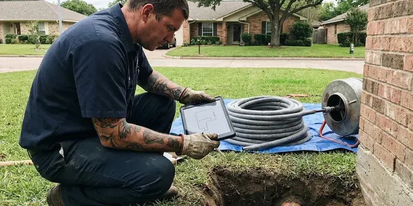

Foundation Leak Repair in Fall River, MA
We repair and reroute water lines under slabs and stem walls in Fall River, MA, and we price each option in writing.
- Reroute or Direct Repair
- Spot Repairs Through Concrete
- Same-Week Leak Locating
- Acoustic and Thermal Locating

Suspect a Foundation Leak in Fall River, MA?
A running leak under the slab keeps soaking the ground under the house, so we put these calls near the top of the board.
Foundation Leak Repair in Fall River, MA That Saves the Slab
BWM Plumbing sees the same pattern in Fall River homes year after year. Tree roots and shifting fill around old clay or cast iron sewer laterals are a frequent cause of backups in established neighborhoods. The work runs in order: test, locate, then repair or reroute. Most homes are back to full water the same day or the next, and you always get the price in writing before we start any of it. Most jobs are short.
Work we handle every week:
- Acoustic and thermal leak detection
- Restoring water flow after a slab leak
- Rerouting water lines overhead or through walls to bypass the foundation

Additional Plumbing Repair Services in Fall River, MA
We offer expert plumbing repair services across Fall River, MA to stop leaks, clear blockages, and keep every fixture working the way it should.


Customers
Why Choose BWM Plumbing for Foundation Leak Repair in Fall River, MA?
Water under a foundation does not stay put. It spreads through the soil and can cause heaving, settling and cracks that cost much more to fix than the leak itself.
- Multiple Options, You see direct repair, reroute and repipe priced side by side and choose what fits.
- Licensed Plumbers, Our technicians are licensed and work to Massachusetts plumbing code, and they pull permits when the job calls for one.
- Repairs That Hold, We use code-approved fittings and proper bedding sand so the repaired section holds up under soil movement.
Citywide Coverage
No part of Fall River is outside our service area. Local builders had habits, and we've learned them. BWM Plumbing can generally get a tech out within a day or two, with spot repair parts on board, so straightforward leaks are often fixed on that first trip.
Experienced Team
Our plumbers have opened a lot of slabs in Massachusetts homes. Training on new detection tools happens yearly. New ground mics, thermal cameras and tracer gas setups all come through training, since sharper locating means a smaller cut.
Safety-First Approach
Before cutting concrete, we scan for post-tension cables, rebar and buried utilities. We never skip that scan. A severed tendon can release with real force and costs thousands to repair, which is why radar comes before the saw on every slab.
Trusted Certified Fall River Plumbing Services Professionals
At BWM Plumbing, we are proud to offer certified plumbing services throughout Fall River, MA. Credentials matter in this trade. Every repair, install and maintenance visit follows strict safety and quality rules, and the plumbers doing the work carry recognized industry credentials.
Call Us Now PHCC Plumbing Contractor Recognition
PHCC Plumbing Contractor Recognition Better Business Bureau (BBB) Accreditation
Better Business Bureau (BBB) Accreditation Angi Certified Pro
Angi Certified Pro ISO 9001 Quality Management Certification
ISO 9001 Quality Management CertificationFinding and Repairing Foundation Leaks in Fall River, MA
Foundation Leak Detection in Fall River
Locating comes before anything else. We split the system first. Each side gets its own pressure test, and once we know which side is losing water, we follow the pipe route with a tracer and listen along it with the ground mic until the sound peaks. Thermal imaging helps verify hot water leaks by showing warm spots on the floor.

Slab Leaks Under Commercial Buildings in Fall River
Commercial slabs carry more plumbing and more foot traffic than a house. They leak for the same reasons. We locate and repair under-slab leaks while the business keeps running, and reroutes can be done after hours so customers never see the work crew or the drop cloths. Property owners and insurers receive a written report with photos.
Basement Wall Sealing and Waterproofing in Fall River, MA
Basement walls in Fall River, MA leak through cracks, tie holes and the joint where the wall meets the floor. Cracks get injected. We inject polyurethane or epoxy into single cracks, and for walls that weep along the bottom, we put in an interior drain tile and sump so water has somewhere to go besides your floor.
Crawl Space Foundation Leak Repair in Fall River, MA
Crawl spaces hide leaks from supply lines, drains and AC condensate lines. Sagging, wet insulation is a common clue. Standing water under a house rots sills and joists and grows mold on the subfloor, so we repair the source and look at the vapor barrier while we are down there. A sump pump may make sense in a Fall River, MA crawl space that floods from outside.
Advanced Leak Detection Technology in Fall River, MA
A ground microphone picks up the hiss of water leaving a pipe under four inches of concrete. That's the main tool. BWM Plumbing pairs it with a line tracer that follows the pipe route and a thermal camera that shows hot water spreading, so in most homes we can mark the leak within a foot or two, in Fall River, MA or anywhere else.
Post-Tension Slab Leak Repair in Fall River
Many newer homes sit on post-tension slabs with steel cables under thousands of pounds of tension. A cut cable can snap hard. Radar scanning maps the cables before any cut, and when the leak is too close to a tendon, we reroute the line instead.
Foundation Leak Repair Cost Comparison in Fall River, MA
Direct repairs usually cost least up front. But flooring repair adds cost. Reroutes run a bit more but skip the concrete and remove the chance of another leak in the old line, while a full repipe makes sense when the house has had two or three leaks already. We compare total costs, flooring and drywall included.

Commercial Foundation Leak Services in Fall River
Shops and offices in Fall River have longer runs and more fixtures on the slab. That makes locating slower. Locating and testing can happen after closing or on a weekend, and the concrete cutting gets booked into your slowest hours. BWM Plumbing documents the line layout for your facilities file.
Local Foundation Leak Repair in Fall River, MA
We know the soil, the foundation types and the way homes here were built. That knowledge picks the method. Older slab-on-grade houses and newer post-tension slabs need different approaches, and knowing which one you have before we arrive saves time. Detection visits usually take one to three hours.
Type 'foundation leak repair near me' in Fall River, MA and BWM Plumbing is who answers. Having worked under slabs across most older neighborhoods, we know where the main line usually runs. That cuts locating time.
BWM Plumbing at a Glance
- Fully licensed plumbing team covering Fall River, MA
- 24/7 emergency service with same-day scheduling
- Upfront, flat-rate pricing before work begins
- 4.9-star rated by 434+ Massachusetts customers
Fall River Map
Fall River Information
- Population
- 93,840
- Area codes
- 508/774/401
- Service area
- Fall River and communities within 40 miles
- Nearby
- New Bedford, Taunton, Brockton, Weymouth Town
A foundation leak in Fall River, MA is two problems at once, because water soaking one patch of ground can lift or drop that section of slab. Tree roots and shifting fill around old clay or cast iron sewer laterals are a common cause of backups in established neighborhoods.
Expert Services
Reach out to BWM Plumbing for reliable plumbing work done by licensed pros in Fall River, MA.
Our Specialized Plumbing Services in Fall River, MA
At BWM Plumbing, we handle the full list of plumbing services across Fall River, MA. We go from leak detection all the way to full system installations, for homes and commercial buildings, and we do it quickly at a fair price. Here are the core services we offer:


What to Expect From Foundation Leak Repair in Fall River, MA
BWM Plumbing works foundation leaks in a fixed sequence: test, locate, quote, repair, retest.
Schedule an Inspection
Call (857) 335-4894 or fill out the form. We get the basics over the phone and book a time that works for you.
Test and Inspect
A technician runs pressure tests and locates the leak, and checks whether the water is coming from plumbing, groundwater or a drainage problem outside.
Written Proposal
You get a written proposal with the repair method, materials, time on site and price. Nothing starts until you approve it.
Frequently Asked Questions About Foundation Leak Repair in Fall River
Price swings with where the leak sits and what is on top of it. Flooring matters a lot. A spot repair through an open floor might run $800 to $2,500, while tunneling or a long reroute in Fall River, MA can reach $3,000 to $8,000 or more. We quote after locating.
Sometimes it does. It depends on the leak. A slab leak in an open room might need a small cut, but we look at tunneling, a reroute or a trenchless liner first, because the less concrete we break, the less patching and flooring work you pay for afterward.
Yes, over time they do. Water washes out soil. Over months, a leak can erode the soil supporting a slab, rot wood in a crawl space and rust the steel in concrete, and fixing the structure costs far more than fixing the pipe. Catch it early.
Yes, because leaking water makes soil expand, move or erode, and that can lift or crack the slab. Tree roots and shifting fill around old clay or cast iron sewer laterals are a common cause of backups in established neighborhoods. Fixing it early lowers the risk.
Spot repairs often skip the permit, while reroutes and repipes may need one depending on the city. We file for permits whenever required.
Gutters and downspouts should carry water at least a few feet from the house. Slope the soil away. Keep soil sloped away from the wall, fix erosion channels, keep moisture steady and have the plumbing tested for slow leaks now and then.
Big cracks, sticking doors or sloping floors are reasons to call one. We fix the plumbing first so the soil has a chance to stabilize.
Look for wet spots on floors or walls, mildew smells and standing water around the foundation. The bill usually goes up. Cracks in the foundation or interior walls that widen over a few months also point to a leak changing the soil, so have the plumbing tested before you call a foundation repair company.
What People Are Saying About Our Plumbing Experts?

Laura S.
Our 40 gallon tank started leaking from the bottom after thirteen years. The tech hauled the old one out, set a new unit with a fresh expansion tank, and had hot water running in about four hours. He took the old tank with him too.
Water Heater Replacement · Quincy, MAMonica A.
Our water bill nearly doubled in one month with no change in how we used water. The tech checked the meter, heard the leak under the hallway with his equipment, and opened a hole about a foot square. Fixed the same day.
Slab Leak Repair · Brookline, MA
Patricia H.
We had a slab leak that two other companies could not find. BWM Plumbing located it in under an hour with a listening device. They rerouted the line through the attic instead of breaking up the floor, so we kept our kitchen tile.
Slab Leak Repair · New Bedford, MA
Marcus H.
Grease from the fryer line kept clogging the kitchen drain at my diner. BWM Plumbing hydro jetted the line after closing, showed me the buildup on camera, and set us up on a quarterly cleaning so it does not catch us on a Friday again.
Drain Cleaning · Fall River, MAKevin O.
Before buying our house I paid for a sewer camera inspection. BWM Plumbing found a belly in the line that held standing water about forty feet from the cleanout. We used the video to get the sellers to fix it before closing.
Sewer Camera Inspection · New Bedford, MA
Paul B.
Our pit pump ran nonstop even in dry weather. The plumber found the check valve was stuck open, so the same water kept cycling back into the pit. New valve, new float switch, done in an hour. It runs quiet now.
Sump Pump · Brockton, MA